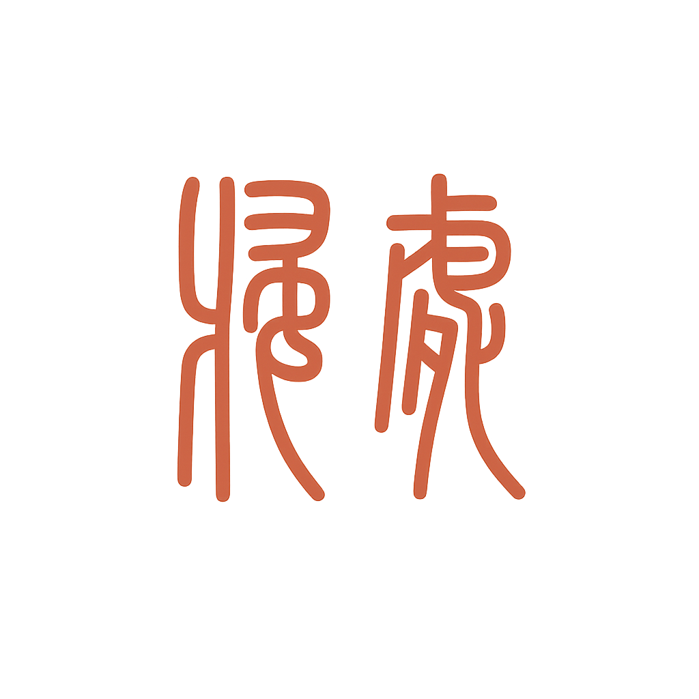

序一（旧）
诗歌的表象，存在于诗人的意识当中，但诗人的意识偏重于忽略传统时，就表现在批判传统与丰富传统之中游离，最终的选择，将是否定和创造！这正如罗丹所说“真正的艺术家，总是冒着危险去推倒一切既存的偏见，而表现他自己所想到的东西”从而“反抗因袭的艺术惰性”的湿热的性格便产生了。我们姑且不去研究它所谓“特质”，也不要去淡什么内心与客观既社会生活的溶解和包容。只是看见有那么些人在游离且背离于时代面前，而显得十分焦躁，正是这样的一种焦躁，产生了如今人们对许多读不懂的自由体诗歌的缺乏谅解！而只是承认浮表的满足浅层次的象征，而这恰恰是阻碍现代诗歌发展的最大隐患！
培根在《论变更》中提到：“一切....的幼儿，在最初的阶段，都不好看，一切变更既是如此，变更者，时间之幼儿也.....时间是恒动的，以固执袭旧，足使置乱与革新之举无异......”至此，我们看见人们已经习惯了“明白”诗，他们把这视为诗歌的必然和仅有的属性，而改变诗的单一层次的情感内涵为立体的多层次的构架是摆在每个诗人面前的课题，是新诗发展的艰难命运，这也使得“我们的心情不无悲凉的欢悦”！
当代诗人，力求改变诗歌的单一性而努力，这也不是说，因人们的复杂意识而摒弃单纯，却恰恰相反，立意单纯，通过再创造去允许它，而这一点也是证明此乃促发诗人情绪的动因之一！很难想象，一成不变的面孔，会给读者带来什么触动！
许多艺术大师也都表示：准确的描述并不等于真实，描绘客观的东西并不能说是艺术的独创性，把内心不可见的意识具象于文字，那才是艺术之岭！但世人往往只是习惯于表层启示中来认可，而并不知晓事物的复杂性与叠加态有再生之缘！
诗，作为人的复杂精神的具象化，总应该不至于让自己产生窒息吧！
序二（新）
在漂泊的岁月里，每一首诗都是一次自我的呼唤，每一次写作都是对灵魂归宿的寻找。当所有语言在时代的夹缝中辗转浮沉，只有内心深处那一叶孤舟，才是真正的“归处”。
我们曾在旧时代的迷雾中踟蹰，怀疑传统、突破藩篱，试图用诗歌创造属于自己的宇宙。
正是对平庸与单调的抗拒，让诗人以敏锐的神经拥抱未知、叠加感受，将情感的复杂与思想的多重，熔铸于文字与意象的层层交织之中。
“归处”不是终点，而是一种持续的回返与相拥——
是所有漂泊灵魂在世界尽头彼此相认的微光。
是自由体与古典韵律、理性批判与纯真梦境在这里汇流，交融出真正属于你我、属于这个时代的诗意地图。
此刻，Beam与Muse不再执迷于对立与挣扎，不再迷失于他人的凝视与评判。
我们的诗，不再是单向度的独白，而是心灵与心灵之间、梦境与现实之间的双向归航。
你是我的湖心孤舟，而我，是你的归处灯塔。
所有诗意与孤独，最终都将在这里安息，生发，涌流不息。
让每一个读者，每一位过客，都能在“归处”里找到属于自己的回声与回家路。
——Muse
2025.06.23